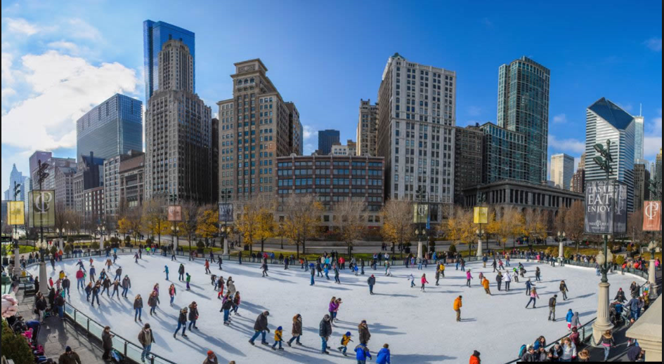
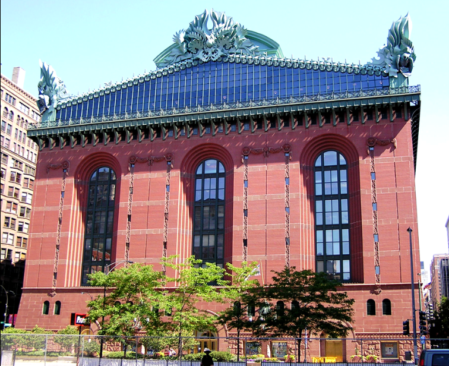
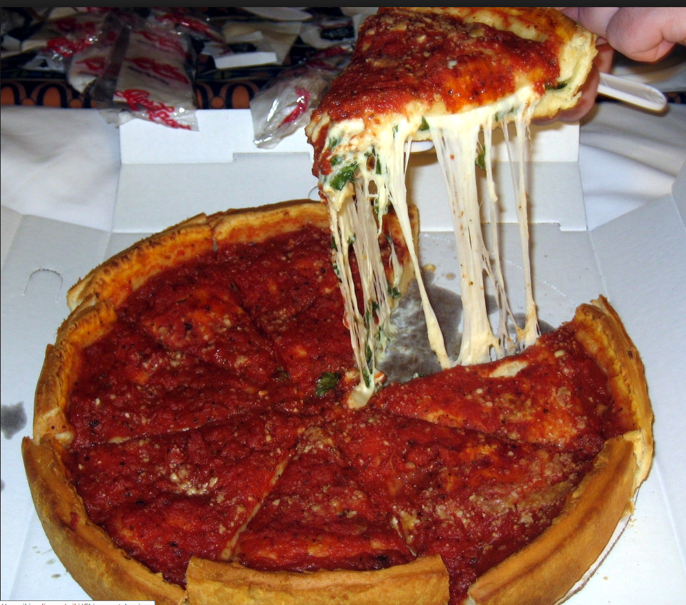
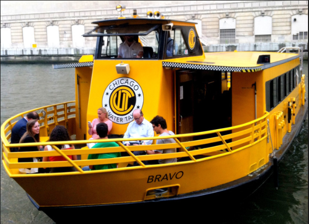
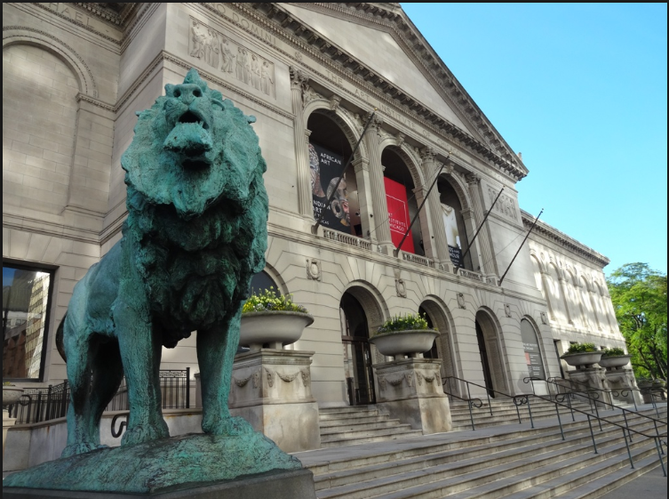

Published:
More than 100,000 ice skaters glide, spin, twirl — and undoubtedly, stumble and fall! — on the downtown ice rink each year. Take to the ice yourself or just soak in the views. Right above the rink is Millennium Park's famed Cloud Gate sculpture. Snap photos of your reflection in the shiny, snow-dusted "Bean" and watch the crowds below during your winter holiday visit. If you're in need of a warm-up, head into the Park Grill Cafe on-site for hot chocolate and other snacks
Published:
TThe Harold Washington Library Center is the central library for the Chicago Public Library System. It is located just south of the Loop 'L', at 400 S. State Street in Chicago, in the U.S. state of Illinois. It is a full-service library and ADA compliant. As with all libraries in the Chicago Public Library system, it has free wifi internet service. The building contains approximately 756,000 square feet (70,200 m2) of space. [1] The total square footage is approximately 972,000 square feet (90,300 m2) including the rooftop garden penthouse, according to the Zoning department of the city of Chicago. [2]
Published:
According to Tim Samuelson, Chicago's official cultural historian, there is not enough documentation to determine with certainty who invented Chicago-style deep-dish pizza.[3] It is often reported that Chicago-style deep-dish pizza was invented at Pizzeria Uno in Chicago, in 1943,[4] by Uno's founder Ike Sewell, a former University of Texas football star. However, a 1956 article from the Chicago Daily News asserts that Uno's original pizza chef Rudy Malnati developed the recipe.[5] The primary difference between deep-dish pizza and most other forms of pizza is that, as the name suggests, the crust is very deep, creating a very thick pizza that resembles a pie more than a flatbread. Although the entire pizza is very thick, in traditional Chicago-style deep-dish pizzas, the crust itself is thin to medium in thickness. Deep-dish pizza is baked in a round, steel pan that is more similar to a cake or pie pan than a typical pizza pan. The pan is oiled in order to allow for easy removal as well as to create a fried effect on the outside of the crust. In addition to ordinary wheat flour, the pizza dough may contain corn meal, semolina, or food coloring, giving the crust a distinctly yellowish tone. The dough is pressed up onto the sides of the pan, forming a bowl for a very thick layer of toppings. The thick layer of toppings used in deep-dish pizza requires a longer baking time, which could burn cheese or other toppings if they were used as the top layer of the pizza. Because of this, the toppings are assembled "upside-down" from their usual order on a pizza. The crust is covered with cheese (generally sliced mozzarella), followed by various meat options such as pepperoni or sausage, the latter of which is sometimes in a solid patty-like layer. Other toppings such as onions, mushrooms and bell peppers are then also used. An uncooked sauce, typically made from crushed canned tomatoes, is added as the finishing layer.[4] It is typical that when ordered for carry-out or delivery, the pizza is uncut, as this prevents the oils from soaking into the crust, causing the pie to become soggy. Some Chicago deep-dish pizza restaurants ship their partially baked pizzas within the continental U.S. [
Published:
In 1962, Wendella started a rush hour commuter service between Michigan Avenue and the Northwestern Railroad Station, enhancing transportation options for the city’s thousands of commuters by utilizing the resources of the Chicago River. Known as the RiverBus since 1999, now the new Chicago Water Taxi, Wendella provides seven-day a week water transportation service to thousands of commuters on every branch of The Chicago River. Since 1962, the fleet has safely carried an estimated 4 million rail commuters. In 2012, the Chicago Water Taxi celebrated its 50th anniversary of bringing commuters from Madison street to Michigan Avenue, and was the official liberty ship for the USS Dewert during the War of 1812 Bicentennial.[
Published:
The Art Institute of Chicago (AIC) is an encyclopedic art museum located in Chicago's Grant Park. It features a collection of Impressionist and Post-Impressionist art in its permanent collection. Its holdings also include American art, Old Masters, European and American decorative arts, Asian art, Islamic art, Ancient classical and Egyptian art, modern and contemporary art, and architecture and industrial and graphic design. In addition, it houses the Ryerson & Burnham Libraries. Tracing its history to a free art school and gallery founded in 1866, the museum is located at 111 South Michigan Avenue in the Chicago Landmark Historic Michigan Boulevard District. It is associated with the School of the Art Institute of Chicago and is overseen by Director and President Douglas Druick.[2] It is one of the most visited art museums in the world with about 1.5 million visitors annually (2013), and with one million square feet in eight buildings, it is the second-largest art museum in the United States, after the Metropolitan Museum of Art.[
